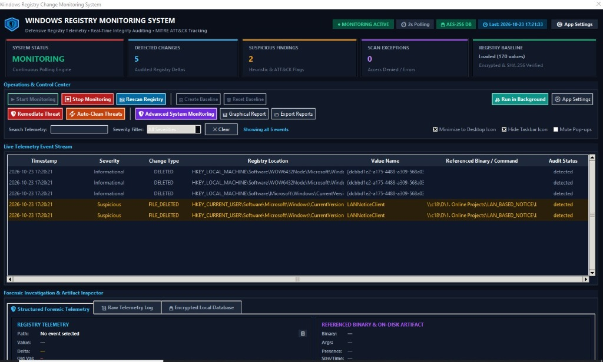

Detect stealth autorun persistence, neutralize security policy tampering, verify cryptographic baseline integrity, and execute 1-click atomic rollback.

Traditional antiviruses often overlook in-memory or stealth registry configuration changes. Registry Monitor delivers immediate visibility into every key delta.
Continuous background scanning across HKCU/HKLM Run, RunOnce, and UserInit keys detects unauthorized startup executables before malicious payloads survive a reboot.
Instantly alerts when ransomware or adversaries attempt to disable Windows Defender, real-time scanning, Windows Firewall, or UAC prompt configurations.
Don't just watch attacks happen. Neutralize malicious autorun processes in memory and atomically restore keys to their trusted baseline state with a single click.
Webhook tokens, SMTP notification credentials, and baseline databases are encrypted with
hardware-bound master keys using Windows CryptProtectData. Zero plaintext exposure.
A lightweight, semi-transparent widget floats on your desktop to provide continuous situational awareness of system health, threat counts, and polling status without cluttering your workspace.
Baseline snapshots are stamped with SHA-256 cryptographic hashes. Any zero-byte or out-of-band tampering triggers instant forensic integrity failures and automated alerts.
Engineered with a high-contrast dark cyberpunk theme optimized for high-stress security monitoring.
Before installing or executing on your endpoint, verify the integrity of the downloaded package via PowerShell:
HKEY_CURRENT_USER (HKCU). To monitor system-wide services and policies in HKEY_LOCAL_MACHINE (HKLM) and execute 1-click rollbacks, Administrator rights are required.